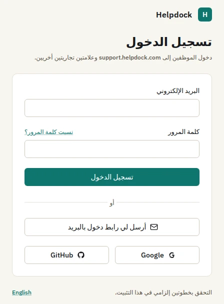

مركز مساعدة على نطاق كل علامة تجارية.
مقالات بالعربية والإنجليزية، وبحث بكل لغة، وتقييم «هل كان هذا مفيدًا؟». مقالات عامة وداخلية، لتخدم المعرفة نفسها العملاء والموظفين.
الصورة: من لوحة تصميم مركز المساعدة، بالإنجليزية.

نظام تذاكر، ومركز مساعدة، ودردشة مباشرة، وذكاء اصطناعي لا يجيب إلا من معرفتك. مفتوح المصدر. تستضيفه بنفسك. بالعربية والإنجليزية.
مجاني برخصة AGPL-3.0Docker Composeتثبيت واحد لكل علاماتك


كل محادثة. مكتب واحد. البريد الإلكتروني وWhatsApp وMessenger وInstagram وTelegram ونافذة الدردشة ونموذج الويب والواجهة البرمجية، كلها تصب في التذاكر نفسها، بالحالات واتفاقيات مستوى الخدمة والقواعد والإسناد نفسها.
POST /api/v1/ticketsتربط كل علامة تجارية حساباتها الخاصة، ويعود الرد عبر القناة التي كتب منها العميل.
Helpdock 1.0 · 20 أكتوبر 2026
اكتملت كل مراحل خطة الإصدار 1.0. وقبل الإصدار: اختبار اختراق خارجي لنافذة الدردشة والواجهة البرمجية، واختبار حِمل، وجولة بقارئ الشاشة، وتجربة تثبيت مع ثلاثة مختبرين من خارج المشروع، وتمرين استعادة من نسخة احتياطية.
 شاهد على X · 1:09
شاهد على X · 1:09
الإصدار 1.0.1 هو الأحدث. اطّلع على ما تغيّر في ملاحظات الإصدار (بالإنجليزية).
مركز مساعدة، ونافذة دردشة، واتفاقيات خدمة، وقواعد، وتقارير، وتسجيل دخول، في التثبيت نفسه.
مقالات بالعربية والإنجليزية، وبحث بكل لغة، وتقييم «هل كان هذا مفيدًا؟». مقالات عامة وداخلية، لتخدم المعرفة نفسها العملاء والموظفين.
الصورة: من لوحة تصميم مركز المساعدة، بالإنجليزية.
مباشرة عبر WebSocket، مع هوية موقّعة اختيارية للمستخدمين المسجّلين. والسكربت الأول محصور في ميزانية 40 KB بعد الضغط.
الصورة: من لوحة تصميم نافذة الدردشة.

كلمات مرور بخوارزمية Argon2id تُفحص مقابل قائمة كلمات المرور المسرّبة، وعامل تحقق ثانٍ إلزامي للمسؤولين، وروابط دخول عبر البريد. ودخول موحد عبر SAML 2.0 وOpenID Connect، مع أدلة إعداد لـ:

ساعات عمل مع العطلات والمناطق الزمنية. تتوقف العدّادات في الحالات التي تحددها للإيقاف. ويُرسل استبيان رضا العملاء عند إغلاق التذكرة.
قواعد سير عمل وقواعد زمنية مع تشغيل تجريبي وسجل تنفيذ. ماكرو بعناصر نائبة. طرق عرض محفوظة، ودمج وتقسيم، ومؤشر حين يفتح وكيلان التذكرة نفسها.
الحجم وأزمنة الاستجابة والالتزام باتفاقيات الخدمة ورضا العملاء وعبء العمل، مع التصدير إلى CSV. واجهة REST بمفاتيح محددة الصلاحيات ووثيقة OpenAPI. وخطافات ويب موقّعة بـ HMAC.
ذكاء اصطناعي مستند إلى معرفتك
يجيب المساعد العملاءَ ويساعد الموظفين من قاعدة معرفة العلامة نفسها. وحين لا تجيب عن السؤال، يجيب شخص من الفريق.
مقالات مركز المساعدة، وملفات PDF وDOCX، والمواقع المؤرشفة، وNotion وGoogle Drive. والإجابات الموجهة للزوار لا تقرأ إلا المعرفة العامة.
تُحذف أي إشارة لا تقود إلى مستند استرجعه فعلًا.
حين لا تجيب قاعدة المعرفة، أو تقل الثقة عن الحد المضبوط للقناة، يتولى فريقك المحادثة.
لا يملك النموذج أي أدوات. تُخفى البيانات الشخصية ويعمل مرشّح لحقن التعليمات قبل كل استدعاء. ويُسجَّل كل استدعاء بتكلفته، وتحدّ الميزانيات إنفاق كل علامة.
glm-4.6 للإجابة، وglm-5.1 للتحكيم، وbge-m3:567m للتضمين، في التشغيل 39322685646. هذا زوج مزوّدين واحد: قيّم النموذج الذي تختاره. وهناك أيضًا ردود مقترحة وملخصات وترجمة وفرز بالذكاء الاصطناعي وتفريغ الرسائل الصوتية. وكل أوضاع الذكاء الاصطناعي معطلة حتى يفعّلها مسؤول العلامة.

ثنائي اللغة
لوحة الإدارة ومركز المساعدة ونافذة الدردشة ورسائل البريد تأتي باللغتين، بتخطيطات من اليمين إلى اليسار.
صورة نافذة الدردشة من لوحة تصميمها. Read this page in English
علامات تجارية متعددة
كل علاماتك التجارية تعمل من التثبيت نفسه، لكل منها واجهتها وبياناتها.
ALTER TABLE "telegram_bots" ENABLE ROW LEVEL SECURITY;
ALTER TABLE "telegram_bots" FORCE ROW LEVEL SECURITY;
CREATE POLICY "telegram_bots_tenant_select"
ON "telegram_bots" FOR SELECT
USING (brand_id = ANY (
nullif(current_setting('app.brand_ids', true), '')::uuid[]
));brand_id تحت سياسة أمان على مستوى الصفوف مفروضة مثل هذه، ويرفض الخادم العمل إن كان دوره في قاعدة البيانات قادرًا على تجاوزها. العزل بين العلامات تفرضه Postgres، لا شيفرة التطبيق وحدها.الأمان
القواعد مكتوبة، والشيفرة مفتوحة، وكل صورة إصدار موقّعة.
كل جدول خاص بالمستأجرين تحت سياسة Postgres مفروضة حسب العلامة، مع نطاق القسم على بيانات التذاكر.
AES-256-GCM بمفتاح رئيسي لا يُخزَّن في قاعدة البيانات، ولا تُعاد الأسرار بعد حفظها.
كل جلب لرابط يقدّمه مستخدم يمر عبر عميل واحد يحجب عناوين الجهاز المحلي والشبكات الخاصة وبيانات السحابة الوصفية، ويعيد التحقق عند كل إعادة توجيه.
يُفحص نوع الملف من بايتاته، ويُعاد ترميزه، ويُحفظ في حاوية خاصة، ويُقدَّم عبر روابط موقّعة قصيرة العمر.
رُوجعت متطلبات ASVS 4.0.3 للمستوى 2 كلها، وعددها 258، واحدًا واحدًا مع الدليل، دون أي ثغرة مفتوحة.
كل صورة إصدار موقّعة دون مفاتيح مخزّنة عبر Cosign، ومنشورة مع SBOM بصيغة CycloneDX.
اقرأ دليل الأمان ومراجعة ASVS وكيف تتحقق من توقيع الصورة (بالإنجليزية). أبلغ عن الثغرات بشكل خاص كما يصف SECURITY.md.
الانتقال
معالج استيراد ثنائي اللغة ينقل سجلّك. ومطابق CSV يدوي يغطي أي أداة أخرى.
اختر المصدر واربط الحساب، أو ارفع ملف تصدير لمطابق CSV.
الأقسام والموظفون والحالات والأولويات والقنوات والوسوم والحقول المخصصة، مع إعدادات مسبقة محفوظة.
قارن الأعداد المتوقعة وافحص الردود والملاحظات والكتّاب والتواريخ والملفات قبل كتابة أي شيء.
ابدأ التشغيل بعد مراجعته، وتابع سجله، وأوقفه مؤقتًا أو استأنفه.
السجل المستورد لا يرسل أي رسالة للعملاء، ولا يشغّل أي قاعدة أو إشعار أو مؤقت لاتفاقية الخدمة.
جرى التحقق من أدوات الاستيراد مقابل خوادم بديلة بُنيت من وثائق الواجهات البرمجية المنشورة لكل مزوّد، لا مقابل حسابات حقيقية. دليل الاستيراد (بالإنجليزية)
بدء سريع
حزمة Docker Compose واحدة على خادم Linux خاص بك. تحتاج إلى:
يتطلب Render خطوة إضافية لإعداد قاعدة البيانات. يفتح رابط DigitalOcean دليل الاستيراد اليدوي.
التوثيق متاح بالإنجليزية.
git clone --depth 1 --branch v1.0.1 \
https://github.com/Docker-Hunterpedia/Helpdock.git
cd Helpdock/docker
cp ../.env.example .env
openssl rand -base64 32 # the master key, for APP_MASTER_KEY2. عدّل .env: اضبط HELPDOCK_VERSION=1.0.1 وعلى الأقل
APP_URLAPP_MASTER_KEYHELPDOCK_APP_PASSWORDDATABASE_URLPOSTGRES_PASSWORDDATABASE_MIGRATION_URLADMIN_HOSTAPI_HOSTACME_EMAILS3_*
docker compose up -d
docker compose ps4. افتح https://<ADMIN_HOST> وأكمل معالج التشغيل الأول. احفظ نسخة احتياطية من .env مع قاعدة البيانات: بدون APP_MASTER_KEY لا يمكن قراءة أي شيء مشفّر.
خارطة الطريق
إصدارات مقترحة من خطة 1.x. لم يبدأ العمل على أي منها بعد، وقد يتغير محتواها وترتيبها.
الخطة كاملة في المرحلة 5 من وثيقة متطلبات المنتج (بالإنجليزية).
لا شيء. Helpdock برنامج حر برخصة GNU AGPL-3.0، بلا فئات مدفوعة ولا مفاتيح ترخيص. وإن عدّلته وأتحت نسختك المعدّلة للناس عبر الشبكة، تطلب منك الرخصة أن تتيح لهم مصدرها.
لا. Helpdock للاستضافة الذاتية فقط: تشغّله على خادمك وتبقى بياناتك عندك. والنسخة المستضافة خارج أهداف إصدارات 1.x صراحةً.
خادم Linux عليه Docker Engine وإضافة Compose v2، و2 vCPU و4 GB من الذاكرة (ويحتاج ClamAV إن فعّلته 2 GB إضافية)، واسما نطاق، والمنفذان 80 و443، وحاوية متوافقة مع S3. وDocker Compose هي بيئة التشغيل المدعومة.
أي مزوّد يدعمه pi-ai، مثل OpenAI وAnthropic وGoogle وOpenRouter وGroq وMistral وxAI وDeepSeek، بمفتاح API أو باشتراك، أو أي خادم متوافق مع OpenAI مثل Ollama أو vLLM، فيمكن أن يعمل النموذج على أجهزتك.
لا. كل أوضاع الذكاء الاصطناعي معطلة حتى يفعّلها مسؤول العلامة. ويعمل المكتب والقنوات ومركز المساعدة ونافذة الدردشة دونه.
العربية والإنجليزية، بتخطيطات من اليمين إلى اليسار، في لوحة الإدارة ومركز المساعدة ونافذة الدردشة ورسائل البريد. ولغات أخرى مقترحة للإصدار 1.3.
نعم، من Zendesk وFreshdesk وZoho Desk بأدوات الاستيراد الخاصة بها، ومن أي أداة أخرى بمطابق CSV اليدوي. ابدأ بالتشغيل التجريبي: جرى التحقق من أدوات الاستيراد مقابل خوادم بديلة، لا حسابات حقيقية.
بشكل خاص، كما يصف SECURITY.md. لا تفتح بلاغًا عامًا من فضلك.
يطوّر Oday Bakkour Helpdock علنًا على GitHub. والمساهمات مرحّب بها؛ ابدأ بـ CONTRIBUTING.md.
سؤال آخر؟ راسلنا على contact@oday-bakkour.com أو ابدأ نقاشًا على GitHub.
ثبّت الإصدار 1.0.1 عبر Docker Compose، أو اقرأ التوثيق، أو ضع نجمة على المستودع لتتابع إصدارات 1.x.
اقرأ التوثيق